今の状態では、皆さんは日本語を使うことができません。日本語を使うためには、ログイン時に日本語の入力方法 (Input Methid: IM) を指定する必要があります。この授業では、日本語の入力に Wnn7/input2 というシステムを使います。Wnn7 が入力したかなやローマ字を漢字に変換するシステムで、kinput2 がキーボードからの入力を Wnn7 に送り、変換結果をアプリケーションプログラムに渡します。
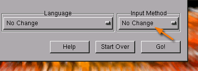
ログイン画面でログイン名とパスワードを入力する前に、右下の Input Method のボタンをクリックして、Wnn7/kinput2 を選んでおいてください。 なお、この最初に操作は１回だけ行います（次回以降のログインでは、以前の設定が保存されています）。
Language はデフォルト（なにも指定しなかった状態）では Japanese (Japan) EUC-JP が選択されているので、特に何も指定する必要はありません。 もし、異なる言語で表示される場合は、ここで Japanese (Japan) EUC-JP を選択してからログインしてください。 あるいは、自分の好みの言語を指定してください。
(1) まず、日本語を入力するアプリケーション（ウィンドウ）を選択します。ここでは試しにターミナルを使ってみましょう。
(2) 次に、Shiftキーを押しながらスペースバーをタイプしてください。
すると、どこかに という小さなウィンドウが現れます。
という小さなウィンドウが現れます。
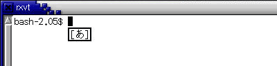
(3) そのままローマ字でタイプすると、それがひらがなになって入力されます。
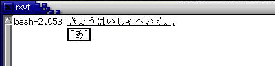
(4) スペースバーをタイプすると、入力したひらがなが漢字かな混じり文に変換されます。
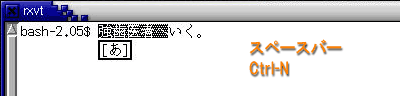
(5) 上の例では「強-歯医者へ」でひとつの文節になっています。これを短くするには、 Ctrl-I (Ctrl を押しながら I) をタイプするか、 Shiftを押しながら←（左矢印）キーをタイプします。 文節を伸ばすには Ctrl-O をタイプするか、 Shiftを押しながら→（右矢印）キーをタイプします。
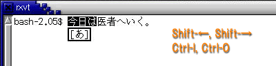
(6) 変換対象の文節を右に移動するにはCtrl-F をタイプするか、 →（右矢印）をタイプします。 左に移動するには Ctrl-B をタイプするか、 ←（左矢印）をタイプします。
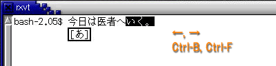
(7) 次の変換候補を呼び出すにはスペースバーあるいは Ctrl-N あるいは ↓（下矢印）、前の候補を呼び出すにはCtrl-P あるいは または↑(上矢印）をタイプします。 なお、カタカナに変換するにはファンクションキーのF7、ひらがなに戻すにはF8を使います。
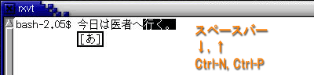
(8) Ctrl-mかCtrl-lかEnter をタイプすれば、 変換結果が確定します。
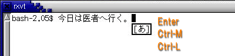
(9) 再度、Shiftキーを押しながらスペースバーをタイプすれば、日本語の入力を終了します。
| 日本語の入力がうまくできないとき |
|---|
| 一旦ログアウトしてから、もう一度ログインしてみてください。それでもうまくいかなければ、Input Method をもう一度選びなおしてからログインしなおしてみてください。どうしてもだめなようなら、教員に相談してください。 |
コンピュータを起動すると、まずオペレーティングシステムが起動します。 このオペレーティングシステムの重要な役割のひとつに、 ディスプレイやキーボードなどの入出力装置の管理があります。特に最近のオペレーティングシステムでは、 ディスプレイ上に複数の仮想的な画面（ウィンドウ、窓）を開いて複数の作業を同時にこなすことができる ウィンドウシステムを搭載することが一般的です。Microsoft の Windows や Apple の MacOS では、ウィンドウシステムはオペレーティングシステムに組み込まれていますが、 この授業で使う Linux や Unix では MIT(マサチューセッツ工科大学） で開発された X Window System という (オペレーティングシステムとは独立した)ソフトウェアがよく使用されます。
ターミナルなどのウィンドウシステムに対応したアプリケーションソフトウェアは、 自分が行おうとする画面表示をウィンドウシステムに対して要求します。 ウィンドウシステムはこの要求に基づいて画面表示を行います。 言わば、ウィンドウシステムはお客の要求にしたがって食事を出すサーバ（給仕）であり、 アプリケーションプログラムはサーバーに対して要求を出すクライアント（客)の役割を果たします。 したがって、このようなソフトウェアの形態をサーバ・クライアントモデルと呼びます。
X Window System では、画面表示用のハードウェア（ビデオカード等）を制御するソフトウェアのことを X サーバ、X サーバに対して画面表示を要求するソフトウェアのことを X クライアントと呼びます。X Window System における X サーバと X クライアント間の通信はネットワークに対して透過的であり、ある X クライアントの画面表示を、LAN 等を介して他のコンピュータ上で稼動している X サーバに出力することができます。
では、ターミナルを開いてください。 ターミナルは画面の下端のパネルにあるディスプレの形をしたアイコンをクリックすれば開きます。

ターミナルは、rxvt というアプリケーションです。 この中でさらに「シェル｣と呼ばれるプログラムが稼動しています。 ターミナルのウィンドウの周囲は、次のようになっています。
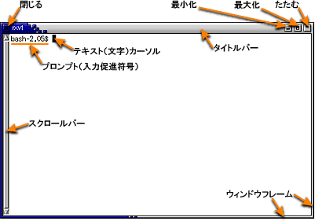
このウィンドウの周囲の枠はターミナル自身が付けているのではなく、 ウィンドウマネージャという別のソフトウェアが付けています （スクロールバーはターミナル自身のものです)。
ウィンドウマネージャはウィンドウシステム上の個々のウィンドウを管理し、 マウスの操作などの情報をウィンドウシステムやアプリケーションプログラムに伝達します。 ウィンドウを移動したり、ウィンドウのサイズを変えたり、ウィンドウを閉じたりする操作は、 このウィンドウマネージャによって実現されています。
X Window System ではウィンドウマネージャがウィンドウシステムやオペレーティングシステムから 独立しているために、ウィンドウマネージャやデスクトップ環境が交換可能です。 これらを別のものに交換することによって、 コンピュータの画面の見かけや操作方法を全く異なるものに変更することができます。 この授業では sawfish というウィンドウマネージャを使用しています。
デスクトップ環境とは、 画面の背景部分やメニューなどを管理するソフトウェアです。Linux で使われる代表的なものに、GNOME と KDE (K Desktop Environment) があります。 sawfish は GNOME と組み合わせて使われるウィンドウマネージャです。
ウィンドウマネージャやデスクトップ環境の切り替えは、ログイン画面の Session のボタンで行います。最初は GNOME が選択されており、 この授業も GNOME を前提にしています。もし他のものを選択した場合は、一旦ログアウトして GNOME に戻すか、自分の選択したものを自分で勉強して使ってください。
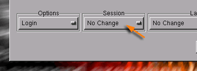
ウィンドウを移動するには、次の２つの方法があります。
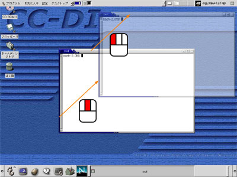
ウィンドウのサイズを変更するには、次の２つの方法があります。
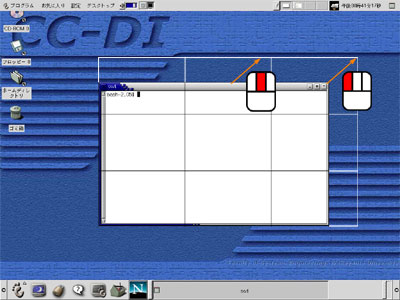
他のウィンドウで隠されてしまったウィンドウを前面に出すには、次の２つの方法があります。
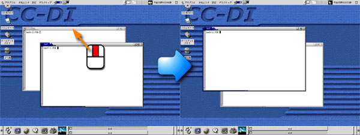
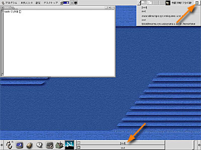
手前にあるウィンドウを奥に送って隠れているウィンドウを表に出す方法は、前節の２と同じです。
ウィンドウを最小化するには、「最小化」ボタンをクリックしてください。
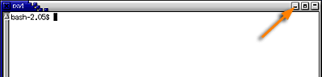
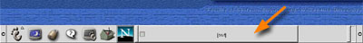
ウィンドウを最大化するには、「最大化」ボタンをクリックしてください。
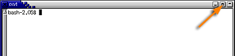
ウィンドウを折りたたむと、ウィンドウはタイトルバーだけになります。 ウィンドウを折りたたむには、次の２つの方法があります。
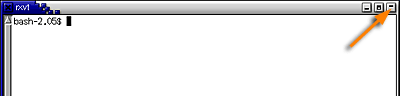
次の２つの方法があります。
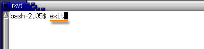
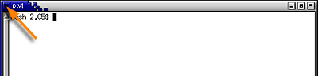
「閉じる」ボタンや「最小化」ボタンをマウスの右ボタンでクリックすると、 ポップアップメニューが現れます。
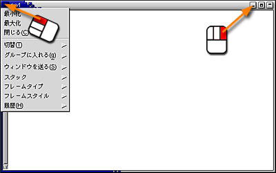
ポップアップメニューからはこれまでに述べたウィンドウ操作のほか、より高度な操作が行えるようになっています。
X Window Ssytem 上で動作しているアプリケーションプログラムが通常の方法では終了できなくなったり、 「閉じる｣ボタンをクリックしてもウィンドウが閉じなくなったときは、強制終了することができます。
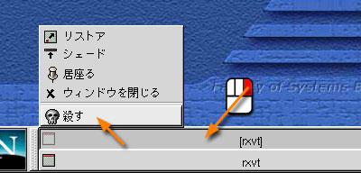
インターネットの代名詞でもある WWW (World Wide Web) を 参照するソフトウェアを“Web ブラウザ”と言います。 これには Windows に組み込まれている Internet Explorer が最もよく使われていますが、Linux 用のものはありません。代わりにここの Linux にはオープンソースで開発が進められている Mozilla をはじめ、GNOME 標準で Mozilla をベースにしたタブブラウザ Galeon、テキストベースの lynx や w3m、テキストエディタ Emacs の中で動く w3、それにファイルマネージャである Nautilus など、さまざまなものがあります。この授業では Mozilla から派生した（そして、実際には Internet Explorer 以前に広く普及していてインターネットブームを起こす立役者であった） Netscape を使用します。
画面の下のパネルにある Netscape のアイコンをクリックしてください。
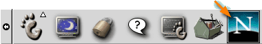
すると、Netscape が起動します（ちょっと時間がかかります）。最初に Netscape を起動すると、有効化 (Activation) のウィンドウが現れます (次回以降このウィンドウは現れません)。
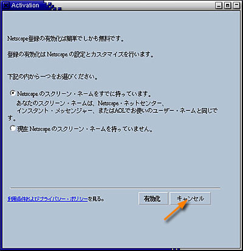
有効化はしてもかまいませんが（Netscape 社から無料のメールアドレスがもらえます）、 この授業では必要ないので、ここではキャンセルしてください。 すると念押しのウィンドウが現れます。
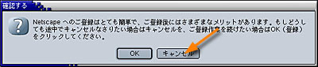
ここでもキャンセルをクリックしてください。しばらく待っていると、Netscape の本体が起動します。
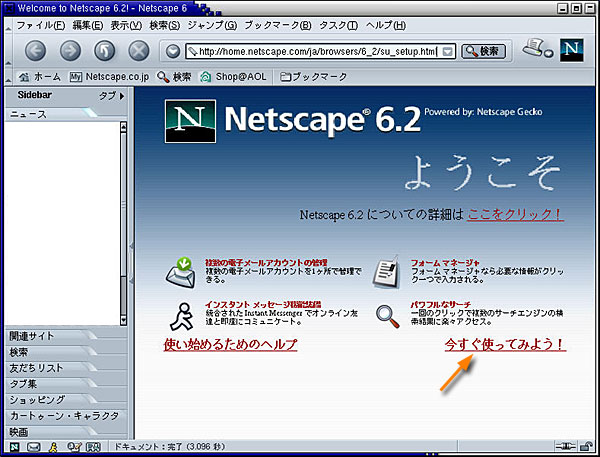
「今すぐ使ってみよう！」をクリックしてください。
Netscape を使うにあたり、 いくつか初期設定を行っておく必要があります。 まず最初に、メニューバーの "編集" メニューから、 "設定" を選んでください。
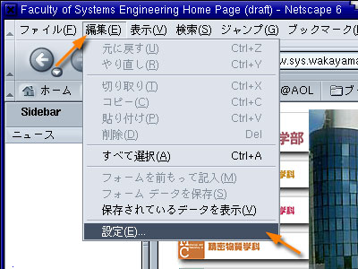
下のようなダイアログウィンドウが現れます。
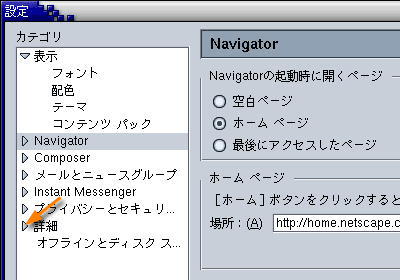
"カテゴリ" という枠の中の 詳細" の左にある三角マークをクリックしてください。 そこに下層のメニューが広がります。
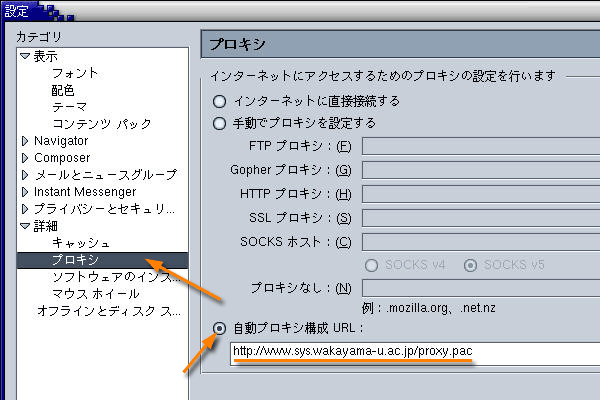
プロキシを選択し、自動プロキシ構成 URL: を選択した後、その下の欄に、以下の内容を設定してください。
| http://www.sys.wakayama-u.ac.jp/proxy.pac |
最後に OK をクリックしてください。
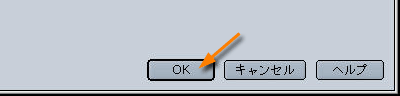
Netscape のメール機能 (Netscape Mail) は、この授業では原則的に使用しませんが、Web ブラウジングの際などに Netscape Mail を使用しなければならない場面が少なからずあります。 そのようなときに正しくメールの送受信ができるように、Netscape Mail のアカウント設定を行っておきます。
NetNetscape のウィンドウの左下隅にある封筒のボタンをクリックしてください。
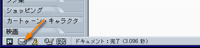
「アカウントウィザード」が起動します。
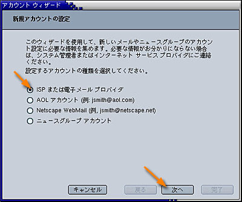
「新規アカウントの設定」では、「ISPまたは電子メールプロバイダ」を選択し、 「次へ｣をクリックしてください。
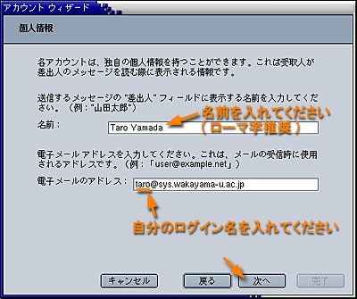
「個人情報」では「名前｣の欄に自分の名前（ローマ字推奨）、 電子メールのアドレスは「自分のログイン名@sys.wakayama-u.ac.jp」にしてください。 ログイン名が s075000 なら、メールアドレスは次のようになります (メールアドレスは利用承認書にも記載されています)。
| s075000@sys.wakayama-u.ac.jp |
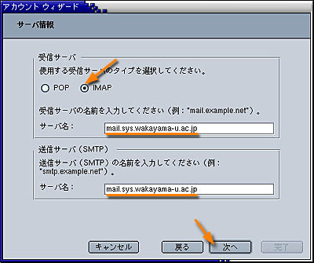
「サーバ情報」では、使用する受信サーバのタイプとして IMAP を選択してください。また、受信サーバ、送信サーバとも、以下の内容を設定してください。
| mail.sys.wakayama-u.ac.jp |
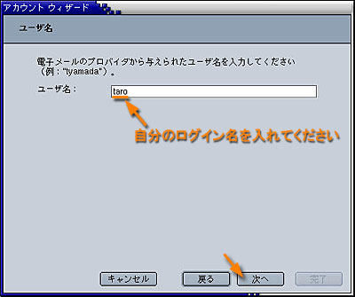
ユーザ名には自分のログイン名を指定してください。
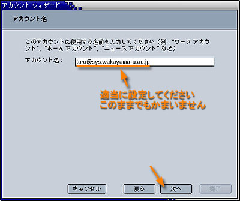
｢アカウント名」はそのままで結構です(変えてもかまいません)。
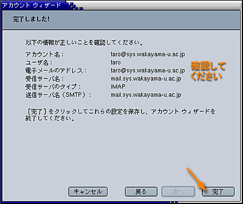
これでメールの設定が完了しました。設定が正しいかどうか確認してください。 間違っていれば「戻る｣のボタンを押して、訂正してください。
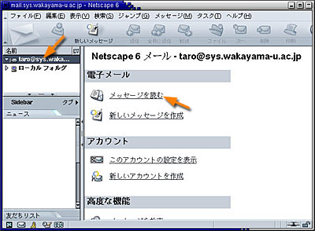
Netscape の Mail が起動します。「名前｣の欄にあるアカウント名をクリックすれば、 そのアカウントの操作画面が現れます。自分宛てのメールを読むには、 「メッセージを読む｣をクリックしてください。そうするとパスワードを聞いてきます。
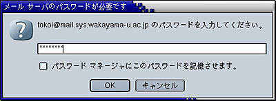
ログインのときに使うパスワードを入力してください。 メールを読むたびにパスワードを入力するのが面倒なら、パスワードを記憶させておいてください。
システム工学部のホームページを開いてみましょう。 システム工学部のホームページを開くには、
| http://www.sys.wakayama-u.ac.jp/ |
という URL (Universal Resouce Locator) を指定します。URL は Web ページの場所（住所）です。
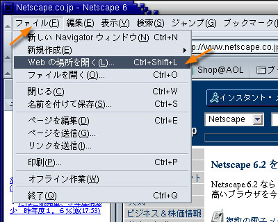
メニューバーのファイルメニューから "Webの場所を開く" を選ぶか、 Ctrl-Shift-L をタイプしてください。すると、次のようなウィンドウが現れます。
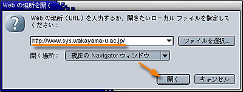
ここに上の URL をタイプし、 その後「開く」のボタンをクリックしてください。 システム工学部のホームページが表示されると思います。 Netscape 本体のウィンドウ上部にある欄に書かれている内容を直接書き換えた後 Enter をタイプしてページを開くこともできます。
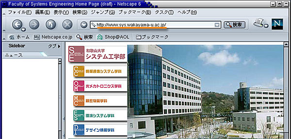
なお、この資料自体は http://www.sys.wakayama-u.ac.jp/~tokoi/lecture/shori1/ にあります。
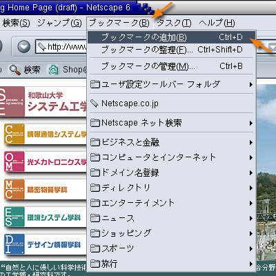
２．５ ブックマークに加えるブックマークは、 よく参照するページを覚えておく機能です。
すでにいくつかのブックマークが登録されていますが、 日本からでは使いようのないものも結構あるので、 必要に応じて自分で整理してください。「ブックマークの管理 Ctrl+B」を選ぶか Ctrl-B をタイプすれば、 ブックマークの管理ウィンドウが現れます。
自分の見たいページを探すには、 サーチエンジンと呼ばれる Web ページを利用します。 インターネット上には多くのサーチエンジンがありますが、 これらはおおまかに次の２つのタイプに分類することができます。
ディレクトリ型は人手によって整理されているために、 無駄な情報が少なく興味のあるカテゴリのページを見つけやすいという 特徴がありますが、その分、 漏れや更新の遅れが大きいと考えられます。
全文検索型は Web ページに含まれる キーワードを機械的に抜き出してデータベースを構築するので、 漏れが少なく更新も早いと考えられますが、 検索結果の中からすばやく本当に必要な情報を見つけるには 多少の経験が必要です。
ただし、最近はこれらを含むほとんどのところで、 ディレクトリ型と全文検索型の両方の機能を持たせています。 また複数のサーチエンジンを横断して検索できる 「メタサーチ」と呼ばれるものもありますが、 ここでは割愛します。
次のキーワードに関する情報を WWW を利用して調べ、 簡単に説明してください。 なお、それぞれ情報源とした Web ページの URL も示してください。。